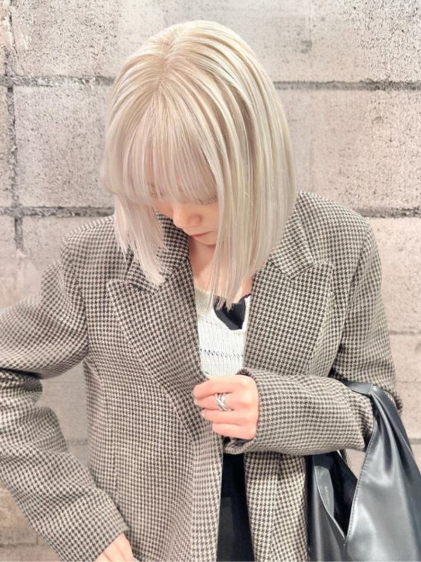
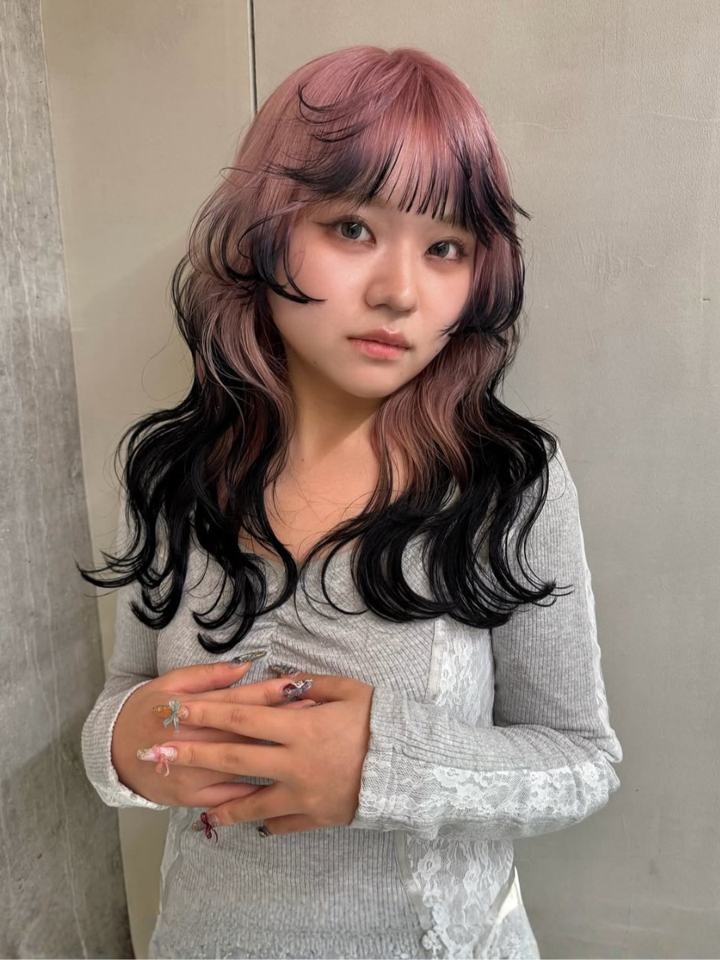
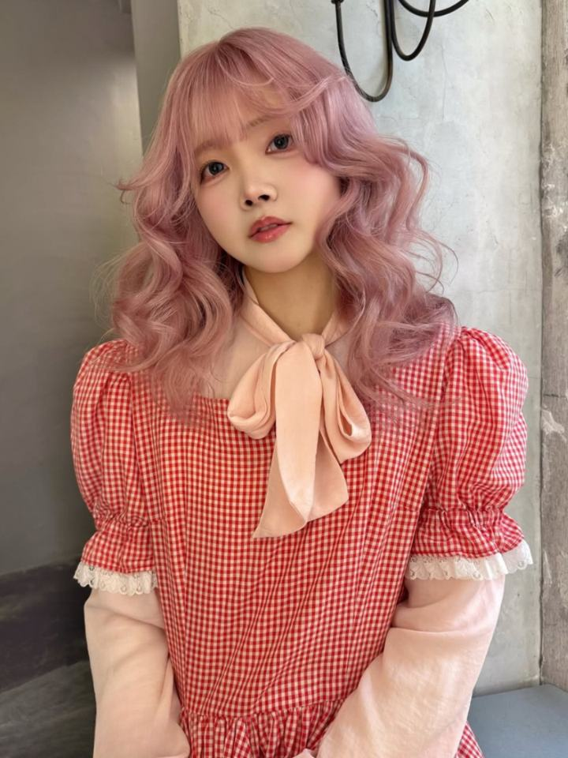
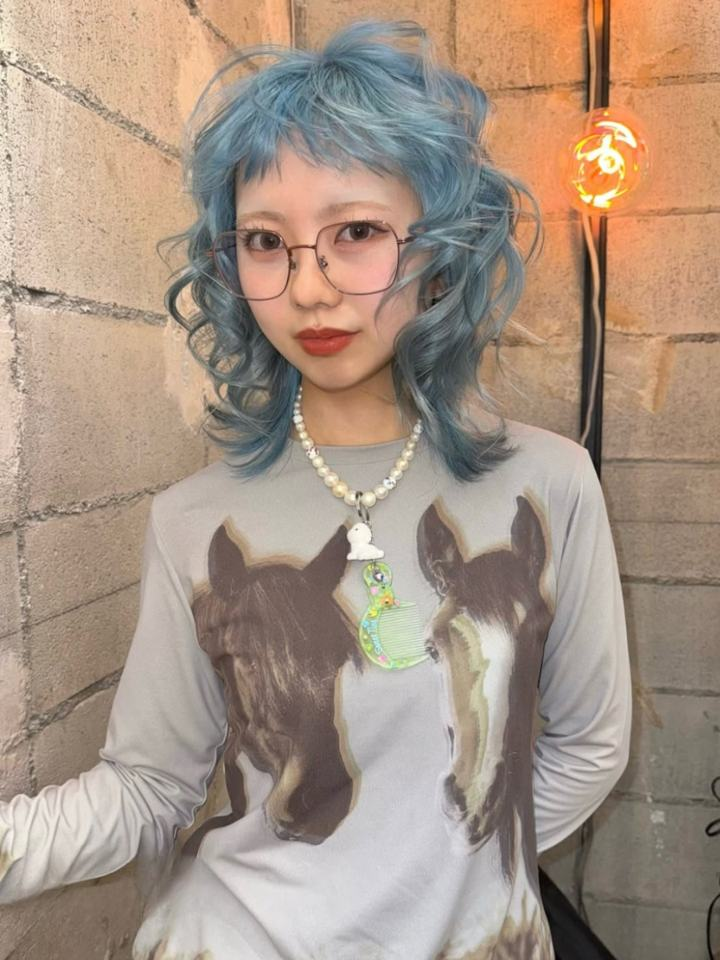
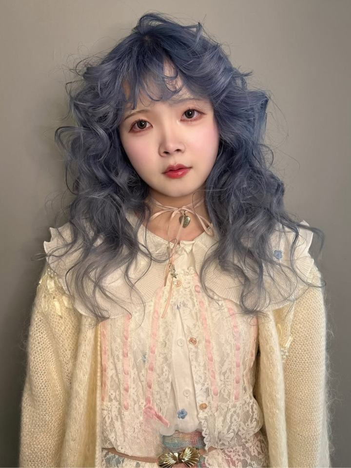
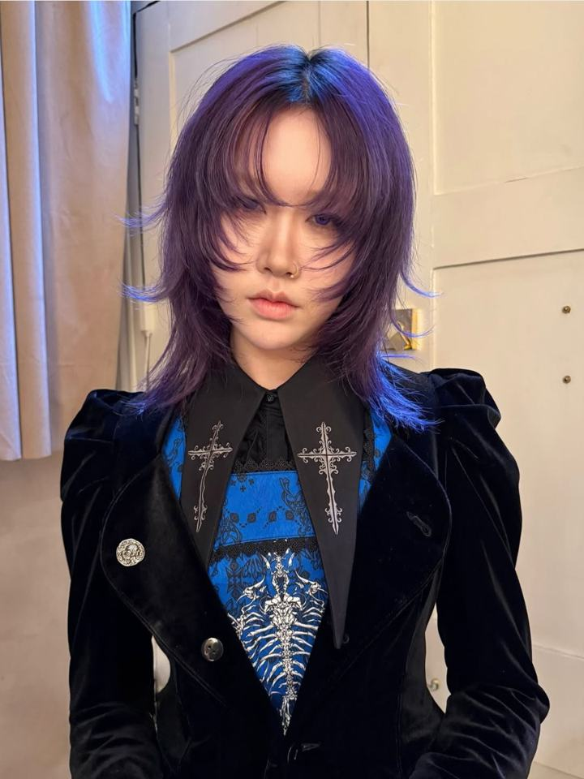
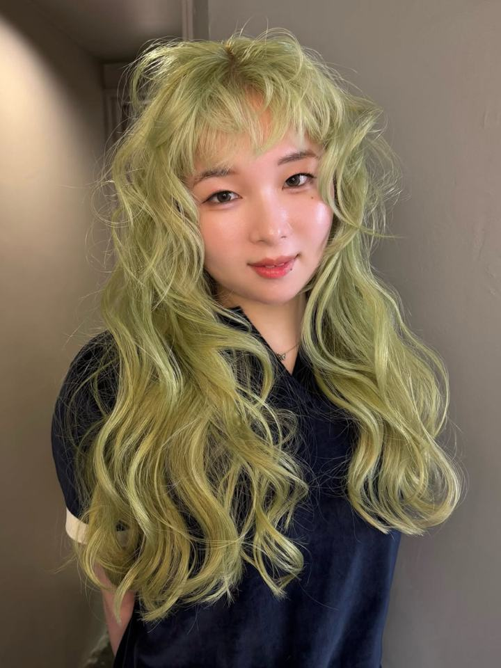
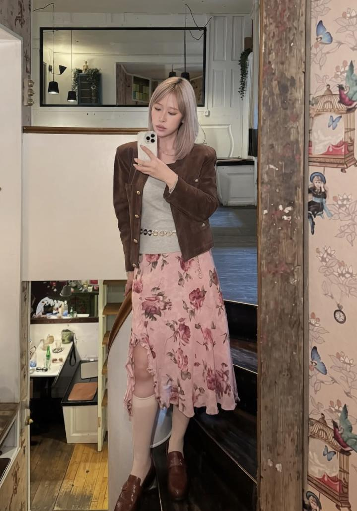

りんさん女性 / 20代前半 / 会社員
★★★★★
約半年ぶりのブリーチに複雑履歴で大変無理なお願いをしましたが、とっても綺麗にしていただきました！いつも本当にありがとうございますm(*_ _)m ブリーチ綺麗に育てられようケア頑張ります！またよろしくお願いします:)

複雑なカラー履歴も、初めてのブリーチも。
今の髪の状態を見ながら、その先まで考えたデザインをご提案します。
色が決まっていなくても、カウンセリングから一緒に決められます
in motion.
for you.
今日だけ綺麗にするのではなく、これからの髪まで考えてハイトーンをつくります。今のカラー・ブリーチ履歴を見て、髪への負担を抑えながら、数回の来店で理想の色へ近づけていきます。
※必要な回数や仕上がりは、髪質・履歴によって変わります。1回で希望の色になる場合もあります。
style.






気になるスタイルは、スクリーンショットしてカウンセリングで見せてください。同じ色でも、あなたの髪の履歴に合わせて調整します。
stylist.

髪には、これまでのカラーやブリーチの履歴が残っています。その履歴を大切にしながら、無理をせず、理想の色まで一緒に育てていきます。
voice.
約半年ぶりのブリーチに複雑履歴で大変無理なお願いをしましたが、とっても綺麗にしていただきました！いつも本当にありがとうございますm(*_ _)m ブリーチ綺麗に育てられようケア頑張ります！またよろしくお願いします:)
私の曖昧な要望からでも、丁寧なヒアリングでなりたい雰囲気を掴んでくださり、いつも大満足な仕上がりです。数年振りのショートカットだったので、後日自分で上手くセットできるか心配でしたが、私の髪質や頭の形に合わせてセットのポイントを教えて頂けて助かりました。後々のことまで考えてくださりいつも本当にありがとうございます。担当スタイリストさんの作るカラーやカット、スタイリングも最高です。またお願いします！
担当美容師さんの雰囲気とセンスがすごく好きで、いつのまにか1年半以上通っています。自分の好きな色味を出してくれる、もしくはこの人のセンスが好き！と直感で思える美容師さんにあまり出会えてこなかったので、今通えてとても嬉しいです。いつも髪を素敵にしてくださってありがとうございます。
ホットペッパービューティーに投稿された口コミより（2026年7月投稿・原文のまま掲載）
flow.
questions.
大丈夫です。好きな服や雰囲気、気になっている色のイメージからでも、カウンセリングで一緒に決めていきます。
施術前に履歴を詳しく伺い、その日にできるベストをご説明してから進めます。髪の状態によっては、数回に分けてのご提案になります。
今の髪の状態を見て、負担を抑えた方法をご提案します。ご自宅でのケア方法もお伝えします。
髪の太さや履歴によって変わります。カウンセリングで、あなたの髪に合わせた目安をお伝えします。
予約ページから変更・キャンセルの方法をご確認いただけます。
access.